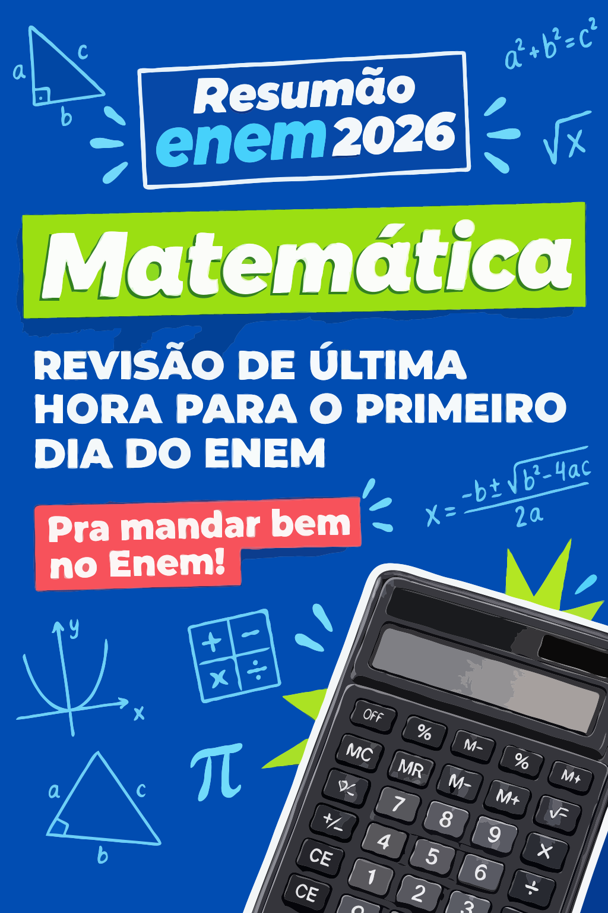
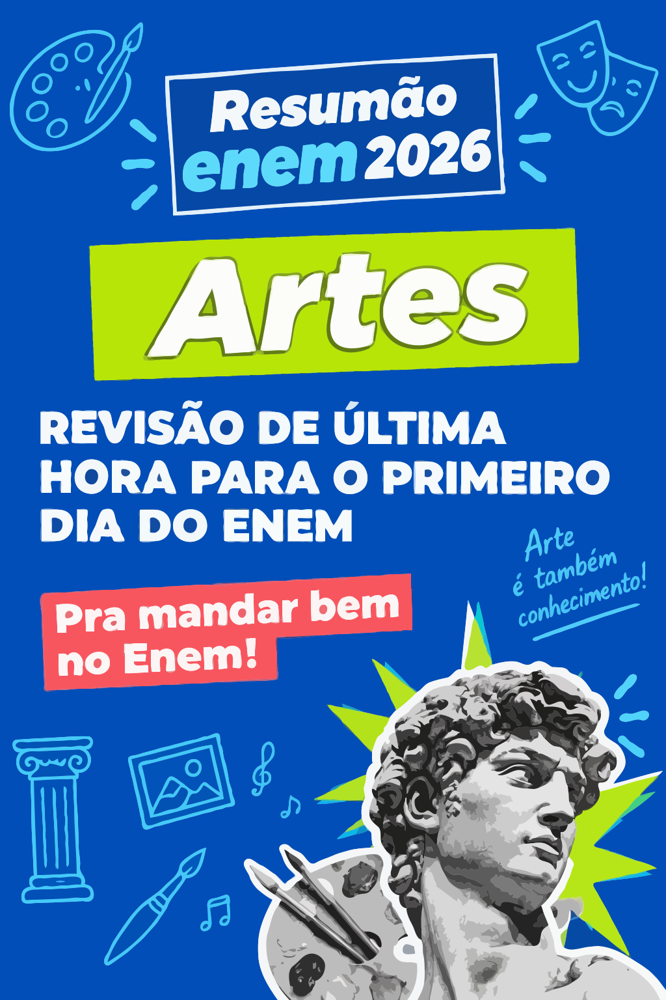
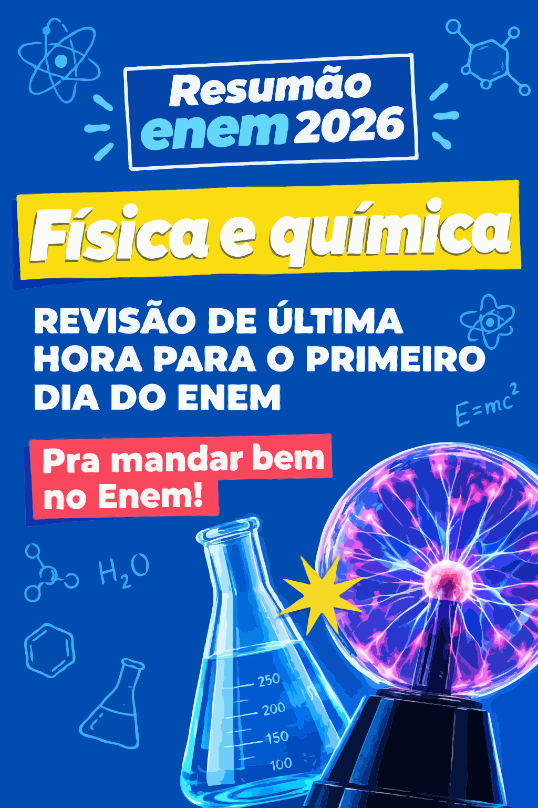

Você terá acesso a resumos dos seguintes assuntos

Matemática
Matemática Básica, Geometria Plana e Espacial, Estatística, Funções, Probabilidade e Análise Combinatória. Fórmulas prontas e atalhos de raciocínio lógico.
▶ Ver tópicos abordados
- • Razão, Proporção e Matemática Básica
- • Geometria Plana e Espacial
- • Estatística, Média e Probabilidade
- • Funções (1º, 2º grau e Exponencial)

Ciências Humanas
História, Geografia, Filosofia e Sociologia reunidas em resumos estratégicos para revisar os principais acontecimentos, conceitos sociais, políticos, econômicos e geográficos cobrados no ENEM.
▶ Ver tópicos abordados
- • História do Brasil e História Geral
- • Geografia Física e Humana
- • Geopolítica e Atualidades
- • Filosofia
- • Sociologia

Linguagens e Códigos
Foco no que o ENEM cobra: Interpretação de texto, coesão, coerência, funções da linguagem, semântica, variação linguística e regras gramaticais aplicadas.
▶ Ver tópicos abordados
- • Funções da Linguagem e Gêneros Textuais
- • Interpretação e Coesão Textual
- • Variedade Linguística
- • Sintaxe, Concordância e Crase


Ciências da Natureza
Biologia, Física e Química reunidas em resumos estratégicos. Revise conceitos, fórmulas, fenômenos naturais e os principais conteúdos cobrados no ENEM.
▶ Ver tópicos abordados
- • Biologia, Citologia e Genética
- • Fisiologia, Evolução e Ecologia
- • Química Geral e Inorgânica
- • Química Orgânica e Físico-Química
- • Cinemática e Dinâmica
- • Termodinâmica e Ondulatória
- • Eletricidade, Magnetismo e Óptica
Invista na sua aprovação
Dois formatos para você começar a estudar com mais foco e organização.
Plano Completo ENEM 2026
Tudo do checklist + planejamento total até a prova.
Melhor custo-benefício
- ✓ Tudo do Checklist ENEM 2026
- ✓ Cronograma semanal de estudos
- ✓ Planner mensal
- ✓ Controle de revisões
- ✓ Controle de simulados
- ✓ Caderno de erros
- ✓ Plano de estudos completo
- ✓ Organização da redação
- ✓ Metas semanais
- ✓ BONUS > REDAÇÕES NOTA 1000
Tópicos abordados
Isenção de Responsabilidade e Termos Institucionais:
Este produto educacional é um material de apoio independente e não possui vínculo institucional, patrocínio ou endosso por parte do Instituto Nacional de Estudos e Pesquisas Educacionais Anísio Teixeira (INEP) ou do Ministério da Educação (MEC). As referências ao desempenho acadêmico e notas visam demonstrar o potencial de cobertura do conteúdo programático, sendo que os resultados individuais variam de acordo com a dedicação, histórico escolar e desempenho do candidato na aplicação oficial do exame.